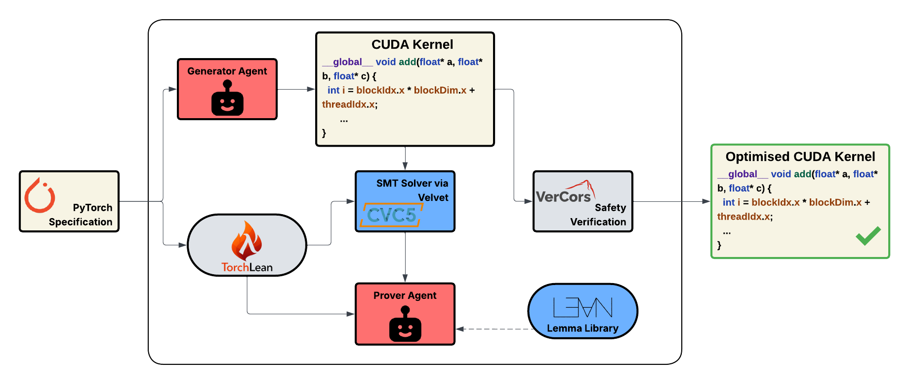
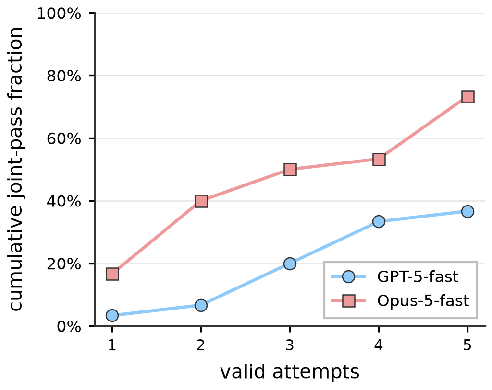
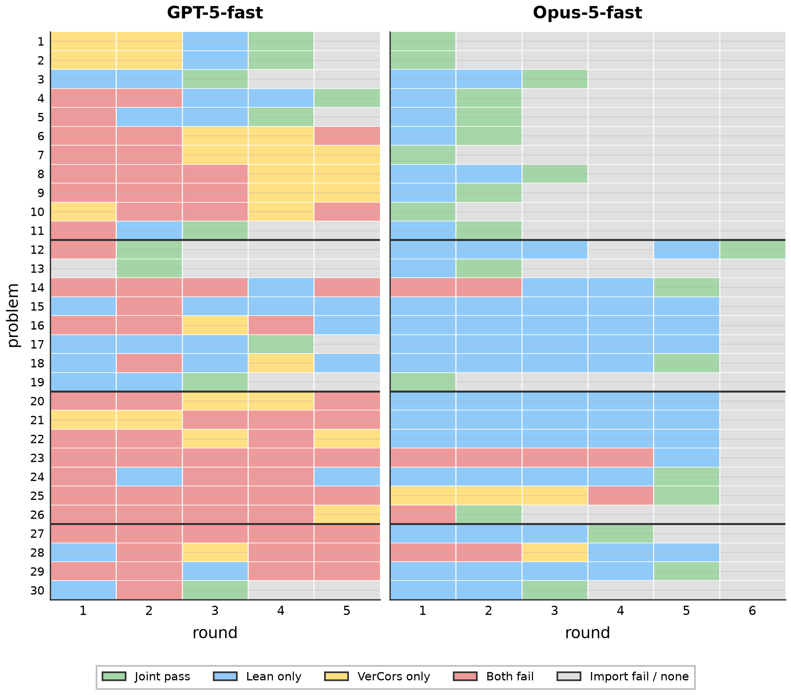

Uses Velvet, a Lean-embedded verifier, with SMT automation and LLM-guided proofs to prove Float32 semantic equivalence between PyTorch specifications and LLM-generated CUDA kernels.
Abstract
Modern statistical model development begins with a high-level specification in an automatic differentiation framework such as PyTorch, JAX, or TensorFlow, which is then lowered to a target backend by a compiler or implemented manually by a research engineer. In this paper, we study whether frontier language models can correctly perform the latter task by generating GPU kernels from high-level benchmark specifications. We introduce a framework in which a language-model agent uses Velvet, a program verifier for imperative programs embedded in Lean, to prove semantic equivalence between a high-level specification and a generated CUDA kernel under an explicit set of assumptions. It also asks the LLM to prove thread safety and data race freedom of the generated kernel in VerCors, a deductive verifier for parallel code. Our main contribution to the formal verification of LLM- generated GPU kernels is showing that a combination of Lean automation and language-model-guided proof construction can verify a broad set of basic neural- network building blocks over floating-point values, allowing LLMs to implement semantically correct and safe kernels. In our framework, floating-point verifications never rely on compiled code and are always checked via the Lean kernel.
Problem
LLM-generated GPU kernels can pass finite correctness tests while being semantically wrong on broader inputs. Existing verification approaches often reason over reals or integers instead of floating point.
Approach
Deterministic compilers translate PyTorch specifications (via FX graphs and TorchLean) and a subset of CUDA into Lean. Velvet is used to reason about the imperative kernel code. Equivalence over Float32 is discharged by the loom_solve SMT tactic (cvc5) or by an LLM Prover agent, with transcendental functions treated as opaque symbols. VerCors separately checks thread safety and data-race freedom, and feedback from both checks is returned to a Generator agent for up to 5 rounds.

Figure 1: The basic architecture of our approach. Deterministic translators are used in order to translate both PyTorch and CUDA programs into Lean. Their semantics can then be compared either by an SMT solver (in our case, cvc5) or a Prover agent. The CUDA kernel is then checked for thread safety by VerCors.
Results
On 30 KernelBench level 1–2 problems, Opus-5-fast proved Lean semantic equivalence for all 30 and passed both checks on 23. GPT-5-fast proved equivalence for 18 and passed both checks on 11. Case studies show the checker rejecting genuine floating-point discrepancies, such as substituting the fast-math intrinsic __expf for expf.

(a) Cumulative joint pass rate

(b) Per-round outcome grid
Family
n
GPT-5 Joint
GPT-5 Lean
Opus-5 Joint
Opus-5 Lean
Elementwise
11
6
6
11
11
Matmul
8
4
8
5
8
Gemm+epilogue
7
0
1
3
7
Reduction
4
1
3
3
4
Overall
30
11 (37%)
18 (60%)
22 (73%)
30 (100%)
Joint (Lean ∧ VerCors) and Lean pass rates within five valid attempts